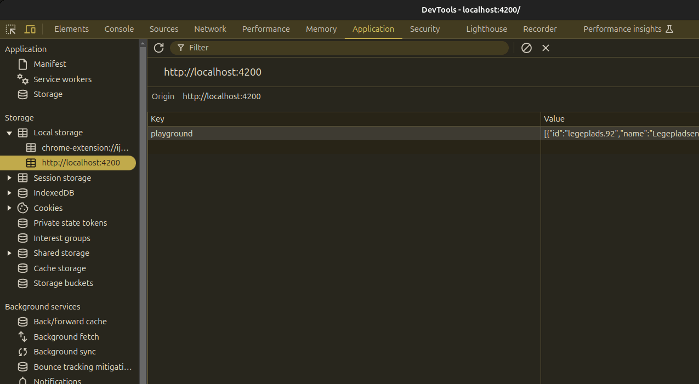

The reason that we see the loader is because our backend is slow!
So let's cache the playgrounds so that we initially can show the playgrounds we have previously fetched.
Use an effect to save the playgrounds in the localStorage. You will need to use setItem & getItem from the localStorage.
As localStorage only saves strings, you will need to convert the array into a string JSON.stringify. And back, when reading the data from localStorage (JSON.parse)
Finally initialize the playgrounds signal with data from localStorage
Consider adding OnPush, now that we use signals
